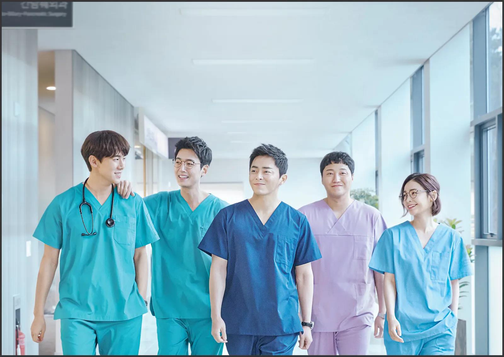
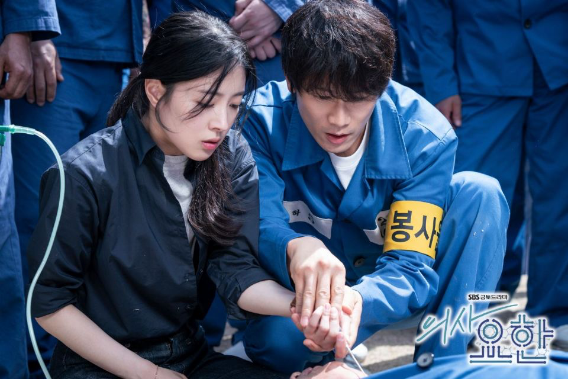
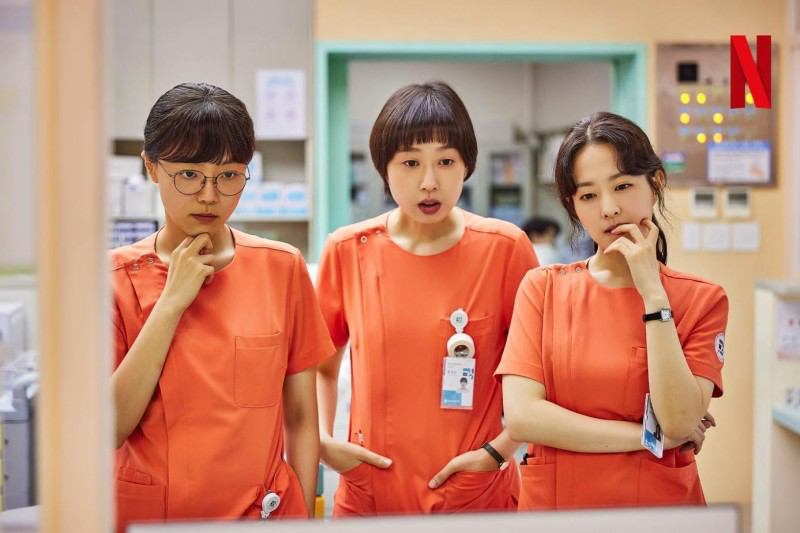

Hello, Welcome to my movie theater!
一、浪漫醫生金師傅
故事寫實、感人
2016年播出，共3季（21集、16集、15集）
評價 ⭐⭐⭐⭐⭐
what - 以天才醫生金師傅及在石垣醫院，與新進年輕醫生們合作所發生的事情
who - 不害怕各種醫學場景，喜歡故事起伏，帶有緊張溫馨氣氛的人
when - 內容為許多事件串連，劇情緊湊不拖延，適合假日找個安靜的地方追1-2集
why - 目前認為最貼近醫學角度拍的故事，金師傅與年輕醫生之間的友誼與信念非常感人，事件題材也都非常新穎，每次都會被驚艷
二、機智醫生生活
歡樂輕鬆、懷舊
2020年播出，共2季（各12集）
評價 ⭐⭐⭐⭐⭐
what - 圍繞五位大學同窗的醫生，呈現醫生、護士與病患、家屬間的溫馨故事
who - 比起深奧的醫學用詞，更多是以心靈層面出發，送給此刻思念家人、朋友的觀眾
when - 內容場景多變也容易理解，可隨時暫停播放，適合在上下班來一兩集溫馨的畫面
why - 故事輕鬆卻也帶出許多溫馨感人的片段，醫生私下互動的場景，以及各自部門所發生的故事都能夠帶出五位醫生的人格，並清楚刻畫出主角之間的好感情
接下來已經預告會拍第三季了，相信很多劇迷都已迫不及待

三、醫生耀漢
社會、道德議題
2019年播出，共16集
評價 ⭐⭐⭐⭐
what - 圍繞疼痛醫學科以及安樂死事件，帶出社會對醫療生死以及道德議題
who - 故事探討了許多關於生命的議題，通過不同角色的立場來呈現，非常值得在劇中細細品味; 同時，也適合與身邊的人一起討論這些議題
when - 故事的議題不是以每集為單位呈現的，因此建議一次觀看2-3集，才能更好地理解和體會其中的內容
why - 故事策劃男主角的疾病與他的職業產生矛盾，劇情透過他在生死關頭的掙扎，展現了醫生們在拯救病患時的初心，在生死面前該不該放手被不斷探討，醫生盡全力搶救病患的過程被細膩刻畫出來，是此劇最有感觸的部分

四、精神病房也會迎來清晨
漫畫改編、扣人心弦
2023年播出，共12集
評價 ⭐⭐⭐⭐⭐
what - 以女主為護士的第一視角展開，描述精神病房的日與夜
who - 故事加入女主角多恩為憂鬱症所困，醫病角色互換，非常值得讓更多人透過此影集，去理解精神病患的世界
when - 內容主打寫實，需要多一點時間消化劇情背後的含義，內容帶出的情緒強烈，適合把全集一次性追完
why - 相比其他醫療劇，這部是以護理師為主角，但醫療專業度一點都不輸其他部，除了題材新穎外，也藉此揭發社會許多陰暗面，在追尋疾病源頭的同時，也告訴觀眾如何以更好的心態面對所有情緒，同理他人也包容自己
